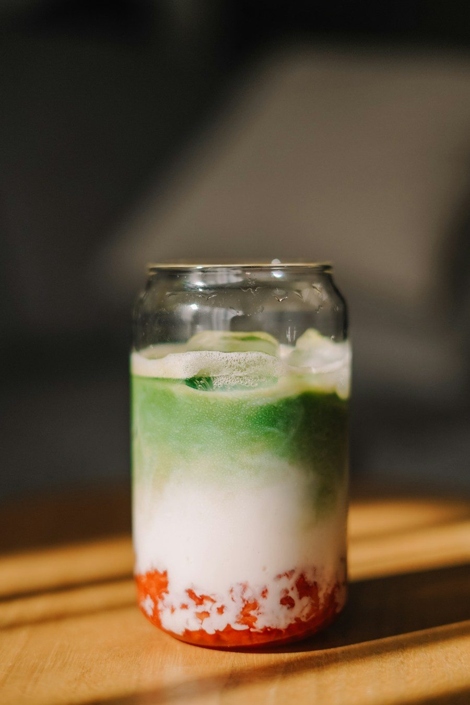

Fresh by default
Tea, pearls, and toppings come together when you order.
The Pearl Street ritual
Small boba shop on Pearl Street and 4th. Fresh tea. Soft pearls. Fast orders.

Our approach
We make each drink to order, with flexible sweetness and ice levels for every customer.
Tea, pearls, and toppings come together when you order.
Choose the sweetness and ice level that fits your day.
Easy pickup keeps good tea moving at campus pace.
Made for campus days: familiar flavors, playful color, and a quick pause between classes.